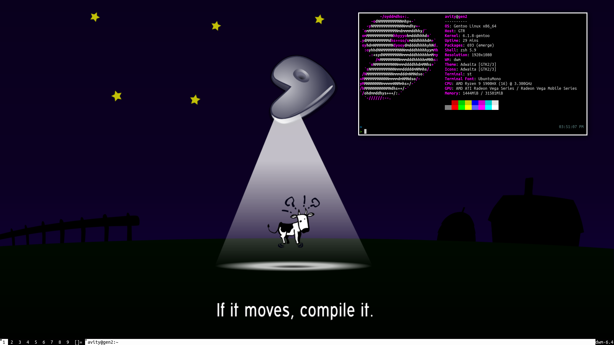

Desktop
My Desktop computer is the Beelink GTR5
Specs:
- Ryzen 9 5900HX
- 32GB 3600MHZ DDR4 RAM
- 500GB NVMe SSD
You can find my make.conf here 
Laptop
I use the IBM/Lenovo Thinkpad X60s Laptop,
I've replaced the wifi card with an Atheros AR5BHB63
Because it doesn't require any non-free firmware to run.
I replaced the regular closed-source BIOS with a customized
version of Libreboot 20160907.
I run Hyperbola GNU/Linux-Libre on it as it's a 100% freedom
respecting OS and supports the laptop's 32-bit architecture.
Server
I use an HP Laptop running Debian as a server.
Mobile Phone
I use a Samsung S3 4G (GT-I9305) Running Replicant 6.0 0002.
Replicant is a great Android distribution because it is fully free and is free of
the default tracking options set in Android.
Software
For Browser, I use IceWeasel on my laptop and Librewolf
on my desktop as they both respect my privacy.
For Web Server & Reverse Proxy, I used to run Apache but now I migrated
to nginx.
For Code Editor, I use Micro because it's simple and efficient.
You can find my settings.json here.
My preferred chat protocol is IRC, I like the pidgin client because it's simple and fast.
My WM of choice is DWM because it's simple and highly customizable.
My terminal emulator of choice is st because it's simple and customizable.
For running programs as root, I used to run su -c but now I use doas.
I don't use sudo
in favor of simplicity.